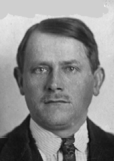
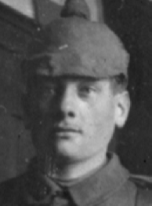
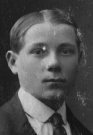
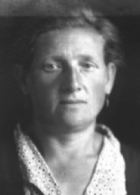
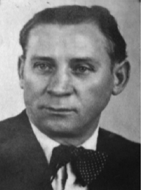
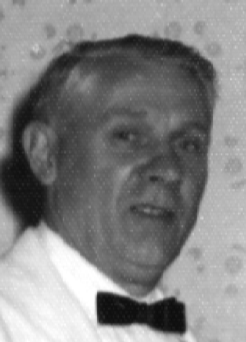
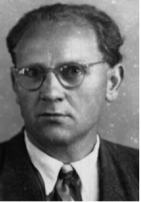
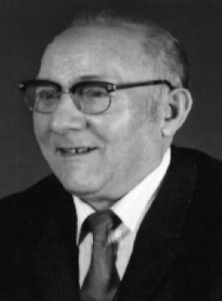
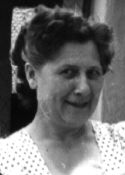
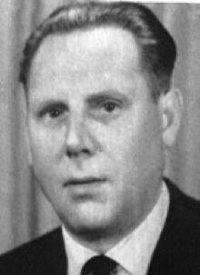

Martin and Eva
Adam Schreiner was the son of Martin Schreiner and Eva Reich Schreiner, both lifelong residents of the Pfalz region of Germany. The Schreiner family’s history is rooted in the villages of Heiligenstein and Harthausen, while the Reich family hailed from Oppau.
Martin Schreiner was born on May 7, 1870, in Heiligenstein, Pfalz, Bayern, Germany, and was christened there the same day. He later moved to Ludwigshafen, where he worked for the BASF chemical company as a Meister (major foreman). On September 21, 1921, Martin was killed in the BASF explosion in Ludwigshafen, one of the deadliest industrial disasters of its time. His body was never recovered, and he was buried in Oppau, Pfalz, Germany.
Eva Reich, daughter of Michael Reich and Barbara Babette Beringer, was born on January 1, 1872, in Oppau. She married Martin on February 17, 1894, in a civil ceremony in Oppau. Eva lived a long life, passing away on September 3, 1964, in Oppau at the age of 92.
Little is known about how Martin and Eva met. Martin likely left the Schreiner family’s traditional home area in Heiligenstein as a teenager seeking work in Oppau, where Eva lived. Their relationship began unconventionally for the time: their first child, Martin Jr., was born out of wedlock, and Eva was pregnant with their second child, Jakob, when they married. The civil marriage record identifies Martin as the father of both children and lists two witnesses from Oppau. Many years later, on November 5, 1911, Martin and Eva were remarried in the Catholic Church in Oppau, likely to “legitimize” their union so that their children could marry within the Church.

The Children of Martin and Eva
Martin and Eva had twelve children, whose lives reflected both the hardships and resilience of early 20th-century Germany.
|  | Martin Schreiner Jr. (1890–1969) — married Elizabeth (Betche) Mörschel on December 7, 1913, and had four children. He served in World War I. After learning that his brother Michael had been killed, he deserted—likely near the end of the war— hid in Hinterweidenthal, and later settled there permanently. Roger recalls him as “a very gentle man.” |

|
Jacob Schreiner (1894–1970) — married Charlotte (Lotte) Steinmüller on September 7, 1917, and had three daughters. Jacob lost an eye in a childhood accident. Roger recounts Tanta Anna’s story: the children were playing when she accidentally handed him scissors point-first, causing the injury. Roger remembers Jacob’s stern, intimidating presence. |
|  | Michael Schreiner (1896–1918) — served in the German army during World War I and was killed in action. The details of his death are unknown, but his loss prompted his brother Martin to desert the army. |
|  | Joseph “Sepple” Schreiner (1897–1917) — served in the German army and died during World War I. He is buried in the Kriegsgräberstätte (soldiers’ cemetery) in Oppau. The exact circumstances of his death are unknown, but a photograph shows him in a German army hospital around 1918, looking unwell. |
|  | Anna Schreiner (1900–1979) — married Johann Franger and had nine children. She was known for her warmth, humor, and kindness. After losing her husband early, she never remarried. Roger recalls that she visited his parents in America several times. |
|  | Benedict (Benno) Schreiner (1902–1970) — married Erna Margarete (Greta) Dornick on December 26, 1926, and had three children. Benno owned a restaurant and bar in Oppau that became a popular family meeting place, complete with a back room for parties and a small bowling alley. Roger remembers, “It was a great place to hang out.” |
|
No Photo
Available |
Susanna Schreiner (1904–1906) — died in early childhood. No records have been found of her exact birth or death dates, cause of death, or burial location. |
|  | Adam Schreiner (1905–1987) — married Emilie Georgina Baumann on May 18, 1929, in Oppau, and had three children. He later immigrated to the United States and became a naturalized citizen on November 16, 1944, in Brooklyn, New York. His godfather was also named Adam Schreiner, his father’s uncle. |
|  | Peter Schreiner (1907–1974) — married Anna Kohler on December 20, 1928, and had seven children. He worked for BASF for over forty years. Roger recalls Peter’s humor and energy, his visits to America, and the lively entertainment he and his son Theo brought to family gatherings. |
|  | Luitpold Schreiner (1909–1991) — married Lisa Scheuermann on September 3, 1930, and had one son, Hans. |
|  | Paula Schreiner (1911–1999) — married Erwin Fries on May 14, 1932. She cared for her mother Eva for the remainder of Eva’s long life. The family home at 32 Dammbruch Strasse, where Adam was born, remained a cherished meeting place. |
|  | Theobald “Dewald” Schreiner (1913–1959) — married Martha Stubenrauch. The youngest of the twelve siblings, he was often teased by his brothers and sisters. Dewald rose into management at BASF and was known for generosity and humor. He suffered from diabetes, which was likely worsened by drinking and smoking, and died young at the age of 46. |
Life in Oppau and the BASF Explosion
Roger describes the family’s early life as close-knit and energetic. Adam and his brother Peter were especially inseparable. Mealtimes in a large household were competitive—“you had to be quick if you wanted enough to eat”—yet despite the size of the family, they seemed to live comfortably enough.


As a BASF foreman, Martin provided stability. During the workweek, when he returned home, the children left the dining room so Eva could serve him dinner in quiet; noise during the meal meant trouble.
In 1921, the BASF chemical explosion in Ludwigshafen claimed Martin’s life along with thousands of workers and nearby residents. The disaster drew worldwide attention, and Red Cross donations from around the world poured into the region to aid survivors. Roger notes this relief would later prove significant for the family, ultimately contributing to his grandparents’ path to America. Many houses in Oppau were severely damaged; the extent of damage to the Schreiner home is unknown.


The Family Home at 32 Dammbruch Strasse
The Schreiner home at 32 Dammbruch Strasse in Oppau symbolizes the family’s endurance. Adam was born there in 1905, indicating the family had established the home by the early 20th century. The original house was likely a two-story structure with a full basement. It was destroyed during World War II and later rebuilt as a three-story home. At one point, the ground floor was rented out. A small garage stood behind the house, reached by a narrow alley—so tight that “nothing larger than a VW Beetle could fit through.”
A photograph from 1968 shows family members gathered in the backyard of the rebuilt home. The leftmost portion represents the Schreiner section of the property. Roger believes the original prewar home was two stories, while the postwar version was expanded. The home remained a gathering place for decades.
Adam’s Education and Apprenticeship
Little is known about Adam’s early education, but it is believed that he attended school through the equivalent of eighth grade before enrolling in trade school. By 1923, he was training as a stonemason apprentice, a discipline that reflected his work ethic and would serve him well in later life.
Roger notes that a photograph from that year shows Adam in his apprentice uniform, marking the start of his adult life.
.jpg)
“They built all the old churches and buildings. No cement was used; all the stones were carefully placed, and these buildings stand after hundreds of years. He brought some of his masonry books to the USA, and they were heavy into algebra and trigonometry.” — Egon Schreiner
Footnotes
- Source references preserved from the family document compiled by Roger Schreiner, dated May 21, 2012 (“Their Story,” pages 6–8 of 42).
- All firsthand recollections and personal observations are attributed to Roger Schreiner (“Roger recalls…”).
- Historical notes on the BASF explosion and Red Cross relief are retained as recorded, given their significance in the family’s eventual migration to America.